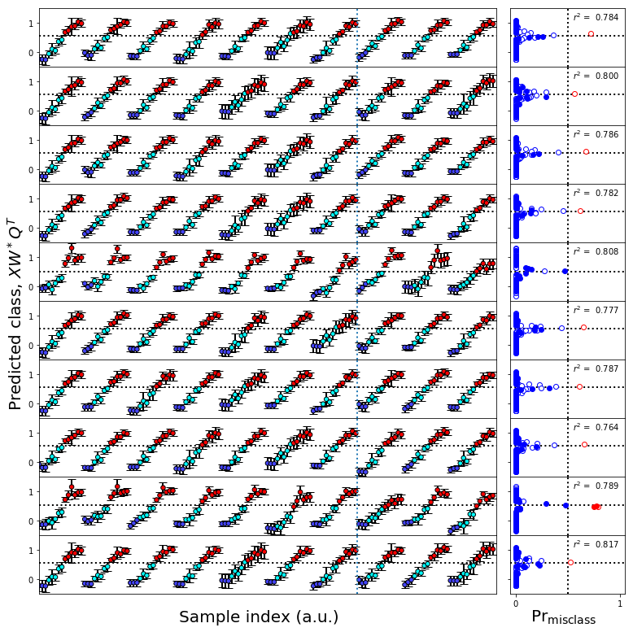

Uncertainty in biomarker identification¶
Imports and local function definitions¶
Imports¶
[1]:
usepylab = True
import matplotlib
if usepylab:
%matplotlib inline
import matplotlib.pyplot as plt
else:
import matplotlib
matplotlib.use('Agg')
import scipy as sp
import numpy as np
import copy
import scipy.linalg
import scipy.stats
import matplotlib.patches as mpatches
#scikit-learn
import sklearn.cross_decomposition
import sklearn.model_selection
import sklearn.decomposition
import sklearn.preprocessing
#NIST spectral analysis and uncertainty analysis packages
import qmet
import ml_uncertainty as plu
#import pls_uncertainty as plu
Utility functions¶
[2]:
def pca_uncertainty_plot(plsax,
series_colors,
classes,
scores,
bootstrap_classes,
bootstrap_scores,
class_names=[],
x_comp=0,y_comp=1,
boot_scatter=False,
sample_ellipses=False,
boot_group_ellipses=False,
group_ellipses=False,
sample_bars=False,
legend=False,
group_tags=False,
):
#Create the figure
#fig,axes = plt.subplots(1,2,figsize=(12,6))
ellipses = []
F_alpha = 0.05 # 95% confidence limit
for class_num,color in enumerate(series_colors):
#Get the column that defines the samples as being in this class
sample_class = classes[:,class_num]
#Convert to a mask
class_mask = sample_class == 1
#PCA scores
x_pl = scores[class_mask,x_comp]
y_pl = scores[class_mask,y_comp]
plsax.scatter(x_pl,y_pl,c=color,edgecolors='k',s=30,zorder=5)
#Number of samples in this class
num_samples = np.count_nonzero(class_mask)
if bootstrap_classes is not None:
#Get the column that defines the samples as being in this class
sample_class = bootstrap_classes[:,class_num]
#Change to a mask
class_mask_boot = sample_class == 1
#Bootstrap scores
x_sc = scores_boot[class_mask_boot,x_comp]
y_sc = scores_boot[class_mask_boot,y_comp]
#Bootstrap scores scatter plot
if boot_scatter: plsax.scatter(x_sc,y_sc,c=color,edgecolors='none',s=1,zorder=1)
#Error bars on individual samples from bootstrap
if sample_bars or sample_ellipses:
for point in range(num_samples):
x_pt = x_sc[point::num_samples]
y_pt = y_sc[point::num_samples]
if sample_bars:
x_err = (np.percentile(x_pt,97.5) - np.percentile(x_pt,2.5))/2
y_err = (np.percentile(y_pt,97.5) - np.percentile(y_pt,2.5))/2
plsax.errorbar(x_pl[point],y_pl[point],xerr=x_err,yerr=y_err,zorder=3,color='k')
if sample_ellipses:
#Calculate the covariance matrix for the bootstrap scores for this sample
cov = np.cov(x_pt,y_pt)
#Calculate the eigenvalues and eigenvectors of cov
lam,v = np.linalg.eig(cov)
#Calculate the size and orientation of the confidence ellipse
lam = np.sqrt(lam)
theta = np.degrees(np.arctan2(*v[:,0][::-1]))
pca_samples = len(x_pt)
#Calculate the 95% confidence limit based on the F distribution
df1 = 2
df2 = pca_samples - df1
F_val = sp.stats.f.isf(F_alpha,df1,df2)
F_mult = F_val * df1*(pca_samples-1)/(df2)
F_mult = np.sqrt(F_mult)
ellipse_dict = dict(xy=(np.mean(x_pt),np.mean(y_pt)),
width=lam[0]*2*F_mult,height=lam[1]*2*F_mult,
angle=theta,linewidth=1,linestyle='--',facecolor='none',edgecolor=color,zorder=4)
ell = mpatches.Ellipse(**ellipse_dict)
if boot_scatter: ell.set_edgecolor('0.2')
if boot_group_ellipses: ell.set_edgecolor('0.6')
plsax.add_artist(ell)
if boot_group_ellipses and np.count_nonzero(class_mask_boot):
cov = np.cov(x_sc,y_sc)
lam,v = np.linalg.eig(cov)
lam = np.sqrt(lam)
theta = np.degrees(np.arctan2(*v[:,0][::-1]))
pca_samples = len(x_sc)
df1 = 2
df2 = pca_samples - df1
F_val = sp.stats.f.isf(F_alpha,df1,df2)
F_mult = F_val * df1*(pca_samples-1)/(df2)
F_mult = np.sqrt(F_mult)
ellipse_dict = dict(xy=(np.mean(x_sc),np.mean(y_sc)),
width=lam[0]*2*F_mult,height=lam[1]*2*F_mult,
angle=theta,linewidth=2,linestyle='--',facecolor='none',edgecolor=color,zorder=4)
ell = mpatches.Ellipse(**ellipse_dict)
if boot_scatter: ell.set_edgecolor('k')
plsax.add_artist(ell)
if group_tags:
if not boot_group_ellipses:
cov = np.cov(x_sc,y_sc)
lam,v = np.linalg.eig(cov)
lam = np.sqrt(lam)
theta = np.degrees(np.arctan2(*v[:,0][::-1]))
pca_samples = len(x_sc)
df1 = 2
df2 = pca_samples - df1
F_val = sp.stats.f.isf(F_alpha,df1,df2)
F_mult = F_val * df1*(pca_samples-1)/(df2)
F_mult = np.sqrt(F_mult)
x_text_offset = lam[0]*F_mult*-1.1
y_text_offset = lam[1]*F_mult*-1.1
plsax.text(np.mean(x_sc+x_text_offset),np.mean(y_sc+y_text_offset),
class_names[class_num],ha='center',va='center',
bbox=dict(edgecolor=color,facecolor='white', alpha=0.9))
if group_ellipses:
#Calculate the covariance matrix for the bootstrap scores for this sample
cov = np.cov(x_pl,y_pl)
#Calculate the eigenvalues and eigenvectors of cov
lam,v = np.linalg.eig(cov)
#Calculate the size and orientation of the confidence ellipse
lam = np.sqrt(lam)
theta = np.degrees(np.arctan2(*v[:,0][::-1]))
df1 = 2
df2 = num_samples - df1
F_val = sp.stats.f.isf(F_alpha,df1,df2)
F_mult = F_val * df1*(num_samples-1)/(df2)
F_mult = np.sqrt(F_mult)
ellipse_dict = dict(xy=(np.mean(x_pl),np.mean(y_pl)),
width=lam[0]*2*F_mult,height=lam[1]*2*F_mult,
angle=theta,linewidth=2,zorder=2,facecolor='none',edgecolor=color)
ell = mpatches.Ellipse(**ellipse_dict)
if boot_scatter: ell.set_edgecolor('k')
plsax.add_artist(ell)
plsax.tick_params(labelsize=12)
if legend:
patches = []
for class_name,color in zip(class_names,series_colors):
patches += [mpatches.Patch(facecolor=color,edgecolor='k',label=class_name)]
plsax.legend(handles=patches)
def score_classes(plsax,
series_colors,
classes,
scores,
bootstrap_classes,
bootstrap_scores,
class_names=[],
x_comp=0,y_comp=1,
boot_scatter=False,
sample_ellipses=False,
boot_group_ellipses=False,
group_ellipses=False,
sample_bars=False,
legend=False,
f_alphas=None):
if f_alphas is None:
f_alphas = np.linspace(0.05,0.95,5)
#print(f_alphas)
F_scores = []
for class_num,color in enumerate(series_colors):
#Get the column that defines the samples as being in this class
sample_class = classes[:,class_num]
#Convert to a mask
class_mask = sample_class == 1
#PCA scores
x_pl = scores[class_mask,x_comp]
y_pl = scores[class_mask,y_comp]
#plsax.scatter(x_pl,y_pl,c=color,edgecolors='k',s=30,zorder=5)
#Number of samples in this class
num_samples = np.count_nonzero(class_mask)
#Get the column that defines the samples as being in this class
sample_class = bootstrap_classes[:,class_num]
#Change to a mask
class_mask_boot = sample_class == 1
#Bootstrap scores for this class
x_sc = scores_boot[class_mask_boot,x_comp]
y_sc = scores_boot[class_mask_boot,y_comp]
if np.count_nonzero(class_mask_boot):
#Calculate the covariance matrix of the boot scores so that we can Hoetelling the samples
cov = np.cov(x_sc,y_sc)
icov = np.linalg.inv(cov)
#print(cov)
pca_samples = len(x_sc)
lam,v = np.linalg.eig(cov)
#Calculate the size and orientation of the confidence ellipse
lam = np.sqrt(lam)
theta = np.degrees(np.arctan2(*v[:,0][::-1]))
df1 = 2
df2 = pca_samples - df1
Hoetelling_mult = df1*(pca_samples-1)/(df2)
xy_tuple = (np.mean(x_sc),np.mean(y_sc))
T_center = np.array([xy_tuple])
#print(T_center.shape)
#print(lam)
for alpha in f_alphas:
#print(alpha)
F_val = sp.stats.f.isf(alpha,df1,df2)
F_mult = F_val * Hoetelling_mult
F_mult = np.sqrt(F_mult)
#print(F_mult)
ellipse_dict = dict(xy=xy_tuple,
width=lam[0]*2*F_mult,height=lam[1]*2*F_mult,
angle=theta,linewidth=1,linestyle=':',zorder=2,facecolor='none',edgecolor=color)
ell = mpatches.Ellipse(**ellipse_dict)
plsax.add_artist(ell)
#Iterate over the sample points and calculate the Hoetelling distance and the corresponding survival function
for xp,yp in zip(x_pl,y_pl):
sample_point = np.array([[xp,yp]])
#print(sample_point.shape)
t_rel = sample_point - T_center
dist = np.sqrt(np.dot(t_rel,t_rel.T))
#print(dist)
t_right = np.dot(icov,t_rel.T)
#print(t_right)
t2_distance = np.dot(t_rel,t_right)
t2_F = t2_distance / Hoetelling_mult
F_score = sp.stats.f.sf(t2_F,df1,df2)
F_scores += [F_score]
F_scores = np.concatenate(F_scores,axis=0)
return F_scores
def plot_bootstrap_pls(train_data,y_train,test_data=None,y_test=None,axes_row=None,train_colors=None,test_colors=None,group=False):
num_train = len(y_train)
num_test = 0
if test_data is not None:
num_test = len(y_test)
num_total = num_train + num_test
if train_colors is None:
train_colors = ['w'] * (num_train)
train_colors = np.array(train_colors)
train_colors[y_train > 0] = 'k'
if test_data is not None:
if test_colors is None:
test_colors = ['w'] * (num_test)
test_colors = np.array(test_colors)
test_colors[y_test > 0] = 'k'
errbar_dict = dict(fmt='none',ecolor='k',capsize=5,zorder=-100,lw=2)
#Get the median of the bootstrap data
train_predict = np.median(train_data,axis=1)
#Confidence limits and errorbar widths
ci_upper_train = np.percentile(train_data,97.5,axis=1)
ci_lower_train = np.percentile(train_data,2.5,axis=1)
error_train = (ci_upper_train - ci_lower_train)/2
if test_data is not None:
test_predict = np.median(test_data,axis=1)
ci_upper_test = np.percentile(test_data,97.5,axis=1)
ci_lower_test = np.percentile(test_data,2.5,axis=1)
error_test = (ci_upper_test - ci_lower_test)/2
#Class boundary value and line formatting
cv = plu.estimate_class_boundary(train_predict,y_train)
class_boundary_dict = dict(color='k',ls=':',lw=2,zorder=-100)
#Pearson R value
#Pearson R on the test data if available, otherwise on the training data
if test_data is not None:
r,p = scipy.stats.pearsonr(y_test,test_predict)
residual,err,mse = plu.get_residual_stats(y_test,test_predict)
else:
r,p = scipy.stats.pearsonr(y_train,train_predict)
residual,err,mse = plu.get_residual_stats(y_train,train_predict)
r2 = r ** 2
rstring = '$r^2$ = {: 5.3f}'.format(r2)
#Misclassification probabilities and training set confidences
prob_zero_train = plu.get_probabilities(class_predicted=train_predict,data_error=error_train,class_value=cv)
train_assigned = np.zeros_like(train_predict)
train_assigned[train_predict > cv] = 1
misclass,misclass_mask_train = plu.find_misclassified(true_class=y_train,assigned_class=train_assigned)
train_confidence = plu.misclass_probability(prob_zero_train,misclass_mask_train)
if test_data is not None:
prob_zero = plu.get_probabilities(class_predicted=test_predict,data_error=error_test,class_value=cv)
test_assigned = np.zeros_like(test_predict)
test_assigned[test_predict > cv] = 1
misclass_test,misclass_mask_test = plu.find_misclassified(true_class=yt,assigned_class=test_assigned)
test_confidence = plu.misclass_probability(prob_zero,misclass_mask_test)
train_order = np.argsort(prob_zero_train)
if test_data is not None:
test_order = np.argsort(prob_zero)
if group:
boot_all = train_data
class_predict = train_predict
colors = train_colors
if test_data is not None:
boot_all = np.concatenate((boot_all,test_data))
class_predict = np.concatenate((class_predict,test_predict))
colors = np.concatenate((train_colors,test_colors))
else:
boot_all = train_data[train_order]
class_predict = train_predict[train_order]
colors = train_colors[train_order]
if test_data is not None:
boot_all = np.concatenate((boot_all,test_data[test_order]))
class_predict = np.concatenate((class_predict,test_predict[test_order]))
colors = np.concatenate((train_colors,test_colors[test_order]))
#Confidence limits on the full set
ci_upper = np.percentile(boot_all,97.5,axis=1)
ci_lower = np.percentile(boot_all,2.5,axis=1)
error = (ci_upper - ci_lower)/2
#Split axes
ax = axes_row[0]
mcax = axes_row[1]
#Class value plot
#Axis limits for the class value plot
ax.set_xlim(0,num_total)
ax.set_ylim(-1,2)
ax.set_yticks([-1,0,1,2])
ax.set_ylabel('Predicted class, $XW^*Q^T$',size=15)
ax.set_xlabel('Sample index (a.u.)',size=15)
ax.set_xticks([])
#Scatter plot and error bar plots for predicted class values
plsplot = ax.scatter(np.arange(num_total),class_predict,
color=colors,edgecolors='k',s=30)
plserr = ax.errorbar(np.arange(num_total),class_predict,
yerr=error,color='k',**errbar_dict)
pls_class_boundaryy = ax.axhline(y=cv,**class_boundary_dict)
#Misclassification probability plot
proby_centerline = mcax.axvline(x=0.5,**class_boundary_dict)#mcax.plot((0.5,0.5),(-1.5,2.5),'k:')
class_centerline = mcax.axhline(y=cv,**class_boundary_dict) #mcax.plot((-1,2),(cv,cv),'k:')
#Misclassification probabilities
#Training set correct classification
mcax.scatter(
train_confidence[~misclass_mask_train],
train_predict[~misclass_mask_train],
label='Correct Train',color='w',edgecolor='b')
mcax.scatter(
1-train_confidence[misclass_mask_train],
train_predict[misclass_mask_train],
label='Incorrect Train',color='w',edgecolor='r')
if test_data is not None:
mcax.scatter(
test_confidence[~misclass_mask_test],
test_predict[~misclass_mask_test],
label='Correct Test',color='b')
mcax.scatter(
1-test_confidence[misclass_mask_test],
test_predict[misclass_mask_test],
label='Incorrect Test',color='r')
mcax.set_xlim(-0.05,1.05)
#mcax.set_ylim(-0.05,1.05)
mcax.set_xticks([0,1])
#mcax.set_yticks([0,0.5,1])
mcax.text(0.95,0.95,rstring,ha='right',va='top',transform=mcax.transAxes)
mcax.set_xlabel(r'$\mathsf{Pr}_\mathsf{misclass}$',size=15)
def nmr_bootstrap_annotate(ax):
#Make the legend
blue_dot = matplotlib.lines.Line2D([],[],color='#4444ff',marker='o',label='Control replicate',linestyle='none')
cyan_dot = matplotlib.lines.Line2D([],[],color='c',marker='o',label='Control',linestyle='none')
red_dot = matplotlib.lines.Line2D([],[],color='r',marker='o',label='Exposed',linestyle='none')
leg = ax.legend(handles=[blue_dot,cyan_dot,red_dot],ncol=3,frameon=True,framealpha=1,numpoints=1)
leg.get_frame().set_edgecolor('w')
#Label the groups
good_labels = np.array(Labels)[outlier_mask]
for xpos,label in enumerate(good_labels):
t = ax.text((xpos+0.5)*numspecs,-0.6,label,ha='center',va='center')
p = ax.axvline(x=(xpos+0.95)*numspecs,color='k',ls='--')
def misclass_legend(mcax):
leg = mcax.legend(scatterpoints=1,fontsize=8,framealpha=0.5,loc='lower right')
leg.get_frame().set_edgecolor('w')
def make_grid_plot(numrows,numcols,figsize=None,plotsize=None,
column_width=6,row_height=4,
label_buffers=None,
ylabel_buffer=0.75,xlabel_buffer=0.5,
xlabel=None,ylabel=None,
add_buffer=False,
**subplots_args):
if plotsize is not None:
column_width,row_height = plotsize
if label_buffers is not None:
xlabel_buffer,ylabel_buffer = label_buffers
full_width = numcols*column_width
full_height = numrows*row_height
if add_buffer:
full_width = numcols*column_width + ylabel_buffer
full_height = numrows*row_height + xlabel_buffer
bottom_buffer = xlabel_buffer/full_height
left_buffer = ylabel_buffer/full_width
ylabel_pos = 0.5*(1+bottom_buffer)
xlabel_pos = 0.5*(1+left_buffer)
fs = (full_width,full_height)
if figsize is not None:
fs = figsize
fig,axes = plt.subplots(numrows,numcols,figsize=fs,squeeze=False,**subplots_args)
fig.subplots_adjust(left=left_buffer,right=1,top=1,bottom=bottom_buffer)
if ylabel:
fig.text(0,ylabel_pos,ylabel,size=15,rotation='vertical',va='center')
if xlabel:
fig.text(xlabel_pos,0.0,xlabel,ha="center",va="center",size=15)
return fig,axes
Consensus analysis¶
Metadata¶
[3]:
#X label data for the NMR spectrum
peakPPM_full = np.array([9.9975, 9.9925, 9.9875, 9.9825, 9.9775, 9.9725, 9.9675, 9.9625, 9.9575, 9.9525, 9.9475, 9.9425, 9.9375, 9.9325, 9.9275, 9.9225, 9.9175, 9.9125, 9.9075, 9.9025, 9.8975, 9.8925, 9.8875, 9.8825, 9.8775, 9.8725, 9.8675, 9.8625, 9.8575, 9.8525, 9.8475, 9.8425, 9.8375, 9.8325, 9.8275, 9.8225, 9.8175, 9.8125, 9.8075, 9.8025, 9.7975, 9.7925, 9.7875, 9.7825, 9.7775, 9.7725, 9.7675, 9.7625, 9.7575, 9.7525, 9.7475, 9.7425, 9.7375, 9.7325, 9.7275, 9.7225, 9.7175, 9.7125, 9.7075, 9.7025, 9.6975, 9.6925, 9.6875, 9.6825, 9.6775, 9.6725, 9.6675, 9.6625, 9.6575, 9.6525, 9.6475, 9.6425, 9.6375, 9.6325, 9.6275, 9.6225, 9.6175, 9.6125, 9.6075, 9.6025, 9.5975, 9.5925, 9.5875, 9.5825, 9.5775, 9.5725, 9.5675, 9.5625, 9.5575, 9.5525, 9.5475, 9.5425, 9.5375, 9.5325, 9.5275, 9.5225, 9.5175, 9.5125, 9.5075, 9.5025, 9.4975, 9.4925, 9.4875, 9.4825, 9.4775, 9.4725, 9.4675, 9.4625, 9.4575, 9.4525, 9.4475, 9.4425, 9.4375, 9.4325, 9.4275, 9.4225, 9.4175, 9.4125, 9.4075, 9.4025, 9.3975, 9.3925, 9.3875, 9.3825, 9.3775, 9.3725, 9.3675, 9.3625, 9.3575, 9.3525, 9.3475, 9.3425, 9.3375, 9.3325, 9.3275, 9.3225, 9.3175, 9.3125, 9.3075, 9.3025, 9.2975, 9.2925, 9.2875, 9.2825, 9.2775, 9.2725, 9.2675, 9.2625, 9.2575, 9.2525, 9.2475, 9.2425, 9.2375, 9.2325, 9.2275, 9.2225, 9.2175, 9.2125, 9.2075, 9.2025, 9.1975, 9.1925, 9.1875, 9.1825, 9.1775, 9.1725, 9.1675, 9.1625, 9.1575, 9.1525, 9.1475, 9.1425, 9.1375, 9.1325, 9.1275, 9.1225, 9.1175, 9.1125, 9.1075, 9.1025, 9.0975, 9.0925, 9.0875, 9.0825, 9.0775, 9.0725, 9.0675, 9.0625, 9.0575, 9.0525, 9.0475, 9.0425, 9.0375, 9.0325, 9.0275, 9.0225, 9.0175, 9.0125, 9.0075, 9.0025, 8.9975, 8.9925, 8.9875, 8.9825, 8.9775, 8.9725, 8.9675, 8.9625, 8.9575, 8.9525, 8.9475, 8.9425, 8.9375, 8.9325, 8.9275, 8.9225, 8.9175, 8.9125, 8.9075, 8.9025, 8.8975, 8.8925, 8.8875, 8.8825, 8.8775, 8.8725, 8.8675, 8.8625, 8.8575, 8.8525, 8.8475, 8.8425, 8.8375, 8.8325, 8.8275, 8.8225, 8.8175, 8.8125, 8.8075, 8.8025, 8.7975, 8.7925, 8.7875, 8.7825, 8.7775, 8.7725, 8.7675, 8.7625, 8.7575, 8.7525, 8.7475, 8.7425, 8.7375, 8.7325, 8.7275, 8.7225, 8.7175, 8.7125, 8.7075, 8.7025, 8.6975, 8.6925, 8.6875, 8.6825, 8.6775, 8.6725, 8.6675, 8.6625, 8.6575, 8.6525, 8.6475, 8.6425, 8.6375, 8.6325, 8.6275, 8.6225, 8.6175, 8.6125, 8.6075, 8.6025, 8.5975, 8.5925, 8.5875, 8.5825, 8.5775, 8.5725, 8.5675, 8.5625, 8.5575, 8.5525, 8.5475, 8.5425, 8.5375, 8.5325, 8.5275, 8.5225, 8.5175, 8.5125, 8.5075, 8.5025, 8.4975, 8.4925, 8.4875, 8.4825, 8.4775, 8.4725, 8.4675, 8.4625, 8.4575, 8.4525, 8.4475, 8.4425, 8.4375, 8.4325, 8.4275, 8.4225, 8.4175, 8.4125, 8.4075, 8.4025, 8.3975, 8.3925, 8.3875, 8.3825, 8.3775, 8.3725, 8.3675, 8.3625, 8.3575, 8.3525, 8.3475, 8.3425, 8.3375, 8.3325, 8.3275, 8.3225, 8.3175, 8.3125, 8.3075, 8.3025, 8.2975, 8.2925, 8.2875, 8.2825, 8.2775, 8.2725, 8.2675, 8.2625, 8.2575, 8.2525, 8.2475, 8.2425, 8.2375, 8.2325, 8.2275, 8.2225, 8.2175, 8.2125, 8.2075, 8.2025, 8.1975, 8.1925, 8.1875, 8.1825, 8.1775, 8.1725, 8.1675, 8.1625, 8.1575, 8.1525, 8.1475, 8.1425, 8.1375, 8.1325, 8.1275, 8.1225, 8.1175, 8.1125, 8.1075, 8.1025, 8.0975, 8.0925, 8.0875, 8.0825, 8.0775, 8.0725, 8.0675, 8.0625, 8.0575, 8.0525, 8.0475, 8.0425, 8.0375, 8.0325, 8.0275, 8.0225, 8.0175, 8.0125, 8.0075, 8.0025, 7.9975, 7.9925, 7.9875, 7.9825, 7.9775, 7.9725, 7.9675, 7.9625, 7.9575, 7.9525, 7.9475, 7.9425, 7.9375, 7.9325, 7.9275, 7.9225, 7.9175, 7.9125, 7.9075, 7.9025, 7.8975, 7.8925, 7.8875, 7.8825, 7.8775, 7.8725, 7.8675, 7.8625, 7.8575, 7.8525, 7.8475, 7.8425, 7.8375, 7.8325, 7.8275, 7.8225, 7.8175, 7.8125, 7.8075, 7.8025, 7.7975, 7.7925, 7.7875, 7.7825, 7.7775, 7.7725, 7.7675, 7.7625, 7.7575, 7.7525, 7.7475, 7.7425, 7.7375, 7.7325, 7.7275, 7.7225, 7.7175, 7.7125, 7.7075, 7.7025, 7.6975, 7.6925, 7.6875, 7.6825, 7.6775, 7.6725, 7.6675, 7.6625, 7.6575, 7.6525, 7.6475, 7.6425, 7.6375, 7.6325, 7.6275, 7.6225, 7.6175, 7.6125, 7.6075, 7.6025, 7.5975, 7.5925, 7.5875, 7.5825, 7.5775, 7.5725, 7.5675, 7.5625, 7.5575, 7.5525, 7.5475, 7.5425, 7.5375, 7.5325, 7.5275, 7.5225, 7.5175, 7.5125, 7.5075, 7.5025, 7.4975, 7.4925, 7.4875, 7.4825, 7.4775, 7.4725, 7.4675, 7.4625, 7.4575, 7.4525, 7.4475, 7.4425, 7.4375, 7.4325, 7.4275, 7.4225, 7.4175, 7.4125, 7.4075, 7.4025, 7.3975, 7.3925, 7.3875, 7.3825, 7.3775, 7.3725, 7.3675, 7.3625, 7.3575, 7.3525, 7.3475, 7.3425, 7.3375, 7.3325, 7.3275, 7.3225, 7.3175, 7.3125, 7.3075, 7.3025, 7.2975, 7.2925, 7.2875, 7.2825, 7.2775, 7.2725, 7.2675, 7.2625, 7.2575, 7.2525, 7.2475, 7.2425, 7.2375, 7.2325, 7.2275, 7.2225, 7.2175, 7.2125, 7.2075, 7.2025, 7.1975, 7.1925, 7.1875, 7.1825, 7.1775, 7.1725, 7.1675, 7.1625, 7.1575, 7.1525, 7.1475, 7.1425, 7.1375, 7.1325, 7.1275, 7.1225, 7.1175, 7.1125, 7.1075, 7.1025, 7.0975, 7.0925, 7.0875, 7.0825, 7.0775, 7.0725, 7.0675, 7.0625, 7.0575, 7.0525, 7.0475, 7.0425, 7.0375, 7.0325, 7.0275, 7.0225, 7.0175, 7.0125, 7.0075, 7.0025, 6.9975, 6.9925, 6.9875, 6.9825, 6.9775, 6.9725, 6.9675, 6.9625, 6.9575, 6.9525, 6.9475, 6.9425, 6.9375, 6.9325, 6.9275, 6.9225, 6.9175, 6.9125, 6.9075, 6.9025, 6.8975, 6.8925, 6.8875, 6.8825, 6.8775, 6.8725, 6.8675, 6.8625, 6.8575, 6.8525, 6.8475, 6.8425, 6.8375, 6.8325, 6.8275, 6.8225, 6.8175, 6.8125, 6.8075, 6.8025, 6.7975, 6.7925, 6.7875, 6.7825, 6.7775, 6.7725, 6.7675, 6.7625, 6.7575, 6.7525, 6.7475, 6.7425, 6.7375, 6.7325, 6.7275, 6.7225, 6.7175, 6.7125, 6.7075, 6.7025, 6.6975, 6.6925, 6.6875, 6.6825, 6.6775, 6.6725, 6.6675, 6.6625, 6.6575, 6.6525, 6.6475, 6.6425, 6.6375, 6.6325, 6.6275, 6.6225, 6.6175, 6.6125, 6.6075, 6.6025, 6.5975, 6.5925, 6.5875, 6.5825, 6.5775, 6.5725, 6.5675, 6.5625, 6.5575, 6.5525, 6.5475, 6.5425, 6.5375, 6.5325, 6.5275, 6.5225, 6.5175, 6.5125, 6.5075, 6.5025, 6.4975, 6.4925, 6.4875, 6.4825, 6.4775, 6.4725, 6.4675, 6.4625, 6.4575, 6.4525, 6.4475, 6.4425, 6.4375, 6.4325, 6.4275, 6.4225, 6.4175, 6.4125, 6.4075, 6.4025, 6.3975, 6.3925, 6.3875, 6.3825, 6.3775, 6.3725, 6.3675, 6.3625, 6.3575, 6.3525, 6.3475, 6.3425, 6.3375, 6.3325, 6.3275, 6.3225, 6.3175, 6.3125, 6.3075, 6.3025, 6.2975, 6.2925, 6.2875, 6.2825, 6.2775, 6.2725, 6.2675, 6.2625, 6.2575, 6.2525, 6.2475, 6.2425, 6.2375, 6.2325, 6.2275, 6.2225, 6.2175, 6.2125, 6.2075, 6.2025, 6.1975, 6.1925, 6.1875, 6.1825, 6.1775, 6.1725, 6.1675, 6.1625, 6.1575, 6.1525, 6.1475, 6.1425, 6.1375, 6.1325, 6.1275, 6.1225, 6.1175, 6.1125, 6.1075, 6.1025, 6.0975, 6.0925, 6.0875, 6.0825, 6.0775, 6.0725, 6.0675, 6.0625, 6.0575, 6.0525, 6.0475, 6.0425, 6.0375, 6.0325, 6.0275, 6.0225, 6.0175, 6.0125, 6.0075, 6.0025, 5.9975, 5.9925, 5.9875, 5.9825, 5.9775, 5.9725, 5.9675, 5.9625, 5.9575, 5.9525, 5.9475, 5.9425, 5.9375, 5.9325, 5.9275, 5.9225, 5.9175, 5.9125, 5.9075, 5.9025, 5.8975, 5.8925, 5.8875, 5.8825, 5.8775, 5.8725, 5.8675, 5.8625, 5.8575, 5.8525, 5.8475, 5.8425, 5.8375, 5.8325, 5.8275, 5.8225, 5.8175, 5.8125, 5.8075, 5.8025, 5.7975, 5.7925, 5.7875, 5.7825, 5.7775, 5.7725, 5.7675, 5.7625, 5.7575, 5.7525, 5.7475, 5.7425, 5.7375, 5.7325, 5.7275, 5.7225, 5.7175, 5.7125, 5.7075, 5.7025, 5.6975, 5.6925, 5.6875, 5.6825, 5.6775, 5.6725, 5.6675, 5.6625, 5.6575, 5.6525, 5.6475, 5.6425, 5.6375, 5.6325, 5.6275, 5.6225, 5.6175, 5.6125, 5.6075, 5.6025, 5.5975, 5.5925, 5.5875, 5.5825, 5.5775, 5.5725, 5.5675, 5.5625, 5.5575, 5.5525, 5.5475, 5.5425, 5.5375, 5.5325, 5.5275, 5.5225, 5.5175, 5.5125, 5.5075, 5.5025, 5.4975, 5.4925, 5.4875, 5.4825, 5.4775, 5.4725, 5.4675, 5.4625, 5.4575, 5.4525, 5.4475, 5.4425, 5.4375, 5.4325, 5.4275, 5.4225, 5.4175, 5.4125, 5.4075, 5.4025, 5.3975, 5.3925, 5.3875, 5.3825, 5.3775, 5.3725, 5.3675, 5.3625, 5.3575, 5.3525, 5.3475, 5.3425, 5.3375, 5.3325, 5.3275, 5.3225, 5.3175, 5.3125, 5.3075, 5.3025, 5.2975, 5.2925, 5.2875, 5.2825, 5.2775, 5.2725, 5.2675, 5.2625, 5.2575, 5.2525, 5.2475, 5.2425, 5.2375, 5.2325, 5.2275, 5.2225, 5.2175, 5.2125, 5.2075, 5.2025, 4.6975, 4.6925, 4.6875, 4.6825, 4.6775, 4.6725, 4.6675, 4.6625, 4.6575, 4.6525, 4.6475, 4.6425, 4.6375, 4.6325, 4.6275, 4.6225, 4.6175, 4.6125, 4.6075, 4.6025, 4.5975, 4.5925, 4.5875, 4.5825, 4.5775, 4.5725, 4.5675, 4.5625, 4.5575, 4.5525, 4.5475, 4.5425, 4.5375, 4.5325, 4.5275, 4.5225, 4.5175, 4.5125, 4.5075, 4.5025, 4.4975, 4.4925, 4.4875, 4.4825, 4.4775, 4.4725, 4.4675, 4.4625, 4.4575, 4.4525, 4.4475, 4.4425, 4.4375, 4.4325, 4.4275, 4.4225, 4.4175, 4.4125, 4.4075, 4.4025, 4.3975, 4.3925, 4.3875, 4.3825, 4.3775, 4.3725, 4.3675, 4.3625, 4.3575, 4.3525, 4.3475, 4.3425, 4.3375, 4.3325, 4.3275, 4.3225, 4.3175, 4.3125, 4.3075, 4.3025, 4.2975, 4.2925, 4.2875, 4.2825, 4.2775, 4.2725, 4.2675, 4.2625, 4.2575, 4.2525, 4.2475, 4.2425, 4.2375, 4.2325, 4.2275, 4.2225, 4.2175, 4.2125, 4.2075, 4.2025, 4.1975, 4.1925, 4.1875, 4.1825, 4.1775, 4.1725, 4.1675, 4.1625, 4.1575, 4.1525, 4.1475, 4.1425, 4.1375, 4.1325, 4.1275, 4.1225, 4.1175, 4.1125, 4.1075, 4.1025, 4.0975, 4.0925, 4.0875, 4.0825, 4.0775, 4.0725, 4.0675, 4.0625, 4.0575, 4.0525, 4.0475, 4.0425, 4.0375, 4.0325, 4.0275, 4.0225, 4.0175, 4.0125, 4.0075, 4.0025, 3.9975, 3.9925, 3.9875, 3.9825, 3.9775, 3.9725, 3.9675, 3.9625, 3.9575, 3.9525, 3.9475, 3.9425, 3.9375, 3.9325, 3.9275, 3.9225, 3.9175, 3.9125, 3.9075, 3.9025, 3.8975, 3.8925, 3.8875, 3.8825, 3.8775, 3.8725, 3.8675, 3.8625, 3.8575, 3.8525, 3.8475, 3.8425, 3.8375, 3.8325, 3.8275, 3.8225, 3.8175, 3.8125, 3.8075, 3.8025, 3.7975, 3.7925, 3.7875, 3.7825, 3.7775, 3.7725, 3.7675, 3.7625, 3.7575, 3.7525, 3.7475, 3.7425, 3.7375, 3.7325, 3.7275, 3.7225, 3.7175, 3.7125, 3.7075, 3.7025, 3.6975, 3.6925, 3.6875, 3.6825, 3.6775, 3.6725, 3.6675, 3.6625, 3.6575, 3.6525, 3.6475, 3.6425, 3.6375, 3.6325, 3.6275, 3.6225, 3.6175, 3.6125, 3.6075, 3.6025, 3.5975, 3.5925, 3.5875, 3.5825, 3.5775, 3.5725, 3.5675, 3.5625, 3.5575, 3.5525, 3.5475, 3.5425, 3.5375, 3.5325, 3.5275, 3.5225, 3.5175, 3.5125, 3.5075, 3.5025, 3.4975, 3.4925, 3.4875, 3.4825, 3.4775, 3.4725, 3.4675, 3.4625, 3.4575, 3.4525, 3.4475, 3.4425, 3.4375, 3.4325, 3.4275, 3.4225, 3.4175, 3.4125, 3.4075, 3.4025, 3.3975, 3.3925, 3.3875, 3.3825, 3.3775, 3.3725, 3.3675, 3.3625, 3.3575, 3.3525, 3.3475, 3.3425, 3.3375, 3.3325, 3.3275, 3.3225, 3.3175, 3.3125, 3.3075, 3.3025, 3.2975, 3.2925, 3.2875, 3.2825, 3.2775, 3.2725, 3.2675, 3.2625, 3.2575, 3.2525, 3.2475, 3.2425, 3.2375, 3.2325, 3.2275, 3.2225, 3.2175, 3.2125, 3.2075, 3.2025, 3.1975, 3.1925, 3.1875, 3.1825, 3.1775, 3.1725, 3.1675, 3.1625, 3.1575, 3.1525, 3.1475, 3.1425, 3.1375, 3.1325, 3.1275, 3.1225, 3.1175, 3.1125, 3.1075, 3.1025, 3.0975, 3.0925, 3.0875, 3.0825, 3.0775, 3.0725, 3.0675, 3.0625, 3.0575, 3.0525, 3.0475, 3.0425, 3.0375, 3.0325, 3.0275, 3.0225, 3.0175, 3.0125, 3.0075, 3.0025, 2.9975, 2.9925, 2.9875, 2.9825, 2.9775, 2.9725, 2.9675, 2.9625, 2.9575, 2.9525, 2.9475, 2.9425, 2.9375, 2.9325, 2.9275, 2.9225, 2.9175, 2.9125, 2.9075, 2.9025, 2.8975, 2.8925, 2.8875, 2.8825, 2.8775, 2.8725, 2.8675, 2.8625, 2.8575, 2.8525, 2.8475, 2.8425, 2.8375, 2.8325, 2.8275, 2.8225, 2.8175, 2.8125, 2.8075, 2.8025, 2.7975, 2.7925, 2.7875, 2.7825, 2.7775, 2.7725, 2.7675, 2.7625, 2.7575, 2.7525, 2.7475, 2.7425, 2.7375, 2.7325, 2.7275, 2.7225, 2.7175, 2.7125, 2.7075, 2.7025, 2.6975, 2.6925, 2.6875, 2.6825, 2.6775, 2.6725, 2.6675, 2.6625, 2.6575, 2.6525, 2.6475, 2.6425, 2.6375, 2.6325, 2.6275, 2.6225, 2.6175, 2.6125, 2.6075, 2.6025, 2.5975, 2.5925, 2.5875, 2.5825, 2.5775, 2.5725, 2.5675, 2.5625, 2.5575, 2.5525, 2.5475, 2.5425, 2.5375, 2.5325, 2.5275, 2.5225, 2.5175, 2.5125, 2.5075, 2.5025, 2.4975, 2.4925, 2.4875, 2.4825, 2.4775, 2.4725, 2.4675, 2.4625, 2.4575, 2.4525, 2.4475, 2.4425, 2.4375, 2.4325, 2.4275, 2.4225, 2.4175, 2.4125, 2.4075, 2.4025, 2.3975, 2.3925, 2.3875, 2.3825, 2.3775, 2.3725, 2.3675, 2.3625, 2.3575, 2.3525, 2.3475, 2.3425, 2.3375, 2.3325, 2.3275, 2.3225, 2.3175, 2.3125, 2.3075, 2.3025, 2.2975, 2.2925, 2.2875, 2.2825, 2.2775, 2.2725, 2.2675, 2.2625, 2.2575, 2.2525, 2.2475, 2.2425, 2.2375, 2.2325, 2.2275, 2.2225, 2.2175, 2.2125, 2.2075, 2.2025, 2.1975, 2.1925, 2.1875, 2.1825, 2.1775, 2.1725, 2.1675, 2.1625, 2.1575, 2.1525, 2.1475, 2.1425, 2.1375, 2.1325, 2.1275, 2.1225, 2.1175, 2.1125, 2.1075, 2.1025, 2.0975, 2.0925, 2.0875, 2.0825, 2.0775, 2.0725, 2.0675, 2.0625, 2.0575, 2.0525, 2.0475, 2.0425, 2.0375, 2.0325, 2.0275, 2.0225, 2.0175, 2.0125, 2.0075, 2.0025, 1.9975, 1.9925, 1.9875, 1.9825, 1.9775, 1.9725, 1.9675, 1.9625, 1.9575, 1.9525, 1.9475, 1.9425, 1.9375, 1.9325, 1.9275, 1.9225, 1.9175, 1.9125, 1.9075, 1.9025, 1.8975, 1.8925, 1.8875, 1.8825, 1.8775, 1.8725, 1.8675, 1.8625, 1.8575, 1.8525, 1.8475, 1.8425, 1.8375, 1.8325, 1.8275, 1.8225, 1.8175, 1.8125, 1.8075, 1.8025, 1.7975, 1.7925, 1.7875, 1.7825, 1.7775, 1.7725, 1.7675, 1.7625, 1.7575, 1.7525, 1.7475, 1.7425, 1.7375, 1.7325, 1.7275, 1.7225, 1.7175, 1.7125, 1.7075, 1.7025, 1.6975, 1.6925, 1.6875, 1.6825, 1.6775, 1.6725, 1.6675, 1.6625, 1.6575, 1.6525, 1.6475, 1.6425, 1.6375, 1.6325, 1.6275, 1.6225, 1.6175, 1.6125, 1.6075, 1.6025, 1.5975, 1.5925, 1.5875, 1.5825, 1.5775, 1.5725, 1.5675, 1.5625, 1.5575, 1.5525, 1.5475, 1.5425, 1.5375, 1.5325, 1.5275, 1.5225, 1.5175, 1.5125, 1.5075, 1.5025, 1.4975, 1.4925, 1.4875, 1.4825, 1.4775, 1.4725, 1.4675, 1.4625, 1.4575, 1.4525, 1.4475, 1.4425, 1.4375, 1.4325, 1.4275, 1.4225, 1.4175, 1.4125, 1.4075, 1.4025, 1.3975, 1.3925, 1.3875, 1.3825, 1.3775, 1.3725, 1.3675, 1.3625, 1.3575, 1.3525, 1.3475, 1.3425, 1.3375, 1.3325, 1.3275, 1.3225, 1.3175, 1.3125, 1.3075, 1.3025, 1.2975, 1.2925, 1.2875, 1.2825, 1.2775, 1.2725, 1.2675, 1.2625, 1.2575, 1.2525, 1.2475, 1.2425, 1.2375, 1.2325, 1.2275, 1.2225, 1.2175, 1.2125, 1.2075, 1.2025, 1.1975, 1.1925, 1.1875, 1.1825, 1.1775, 1.1725, 1.1675, 1.1625, 1.1575, 1.1525, 1.1475, 1.1425, 1.1375, 1.1325, 1.1275, 1.1225, 1.1175, 1.1125, 1.1075, 1.1025, 1.0975, 1.0925, 1.0875, 1.0825, 1.0775, 1.0725, 1.0675, 1.0625, 1.0575, 1.0525, 1.0475, 1.0425, 1.0375, 1.0325, 1.0275, 1.0225, 1.0175, 1.0125, 1.0075, 1.0025, 0.9975, 0.9925, 0.9875, 0.9825, 0.9775, 0.9725, 0.9675, 0.9625, 0.9575, 0.9525, 0.9475, 0.9425, 0.9375, 0.9325, 0.9275, 0.9225, 0.9175, 0.9125, 0.9075, 0.9025, 0.8975, 0.8925, 0.8875, 0.8825, 0.8775, 0.8725, 0.8675, 0.8625, 0.8575, 0.8525, 0.8475, 0.8425, 0.8375, 0.8325, 0.8275, 0.8225, 0.8175, 0.8125, 0.8075, 0.8025, 0.7975, 0.7925, 0.7875, 0.7825, 0.7775, 0.7725, 0.7675, 0.7625, 0.7575, 0.7525, 0.7475, 0.7425, 0.7375, 0.7325, 0.7275, 0.7225, 0.7175, 0.7125, 0.7075, 0.7025, 0.6975, 0.6925, 0.6875, 0.6825, 0.6775, 0.6725, 0.6675, 0.6625, 0.6575, 0.6525, 0.6475, 0.6425, 0.6375, 0.6325, 0.6275, 0.6225, 0.6175, 0.6125, 0.6075, 0.6025, 0.5975, 0.5925, 0.5875, 0.5825, 0.5775, 0.5725, 0.5675, 0.5625, 0.5575, 0.5525, 0.5475, 0.5425, 0.5375, 0.5325, 0.5275, 0.5225, 0.5175, 0.5125, 0.5075, 0.5025, 0.4975, 0.4925, 0.4875, 0.4825, 0.4775, 0.4725, 0.4675, 0.4625, 0.4575, 0.4525, 0.4475, 0.4425, 0.4375, 0.4325, 0.4275, 0.4225, 0.4175, 0.4125, 0.4075, 0.4025, 0.3975, 0.3925, 0.3875, 0.3825, 0.3775, 0.3725, 0.3675, 0.3625, 0.3575, 0.3525, 0.3475, 0.3425, 0.3375, 0.3325, 0.3275, 0.3225, 0.3175, 0.3125, 0.3075, 0.3025, 0.2975, 0.2925, 0.2875, 0.2825, 0.2775, 0.2725, 0.2675, 0.2625, 0.2575, 0.2525, 0.2475, 0.2425, 0.2375, 0.2325, 0.2275, 0.2225, 0.2175, 0.2125, 0.2075, 0.2025])
#Synthetic sample names for the interlaboratory comparison
Spectrum_names = ['S1a', 'S1b', 'S1c', 'S1d', 'S1e', 'S1f', 'S2', 'S3', 'S4', 'S5', 'S6' ]
#Biological sample names
Bio_Spectrum_names = ['C1a', 'C1b', 'C1c', 'C2', 'C3', 'C4', 'C5', 'C6', 'E1', 'E2', 'E3', 'E4', 'E5', 'E6']
#laboratory identifiers
Labels = [u'0115 \n 600 MHz',
u'0122 \n 500 MHz',
u'0258 \n 600 MHz',
u'0333 \n 500 MHz',
u'0711 \n 600 MHz',
u'0714 \n 800 MHz',
u'2861 \n 500 MHz',
u'7042 \n 800 MHz',
u'8865 \n 500 MHz',
u'9541 \n 600 MHz']
#File containing the raw NMR data
data_file_name = "mann.test"
bio_data_file_name = "bio.test"
#The range of the data that will actually be used (remove anything anywhere near the water signal)
range_to_use = list(range(959)) + list(range(1058,1860))
bio_range_to_use = list(range(959)) + list(range(1058,1860))
#range_to_use = None
#Number of bins for the histogram
num_bins = 20
#Distance metrics
jeffries = r'Symmetric Kullback-Liebler'
jensen = r'Jensen-Shannon'
hellinger = r'Hellinger'
mahalanobis = r'Mahalanobis'
nmr_distance_metrics = [
dict(metric=r'Mahalanobis',function='mahalanobis'),
dict(metric=r'Hellinger',function=qmet.hellinger_hyp),
dict(metric=r'Symmetric Kullback-Liebler',function=qmet.jeffries),
dict(metric=r'Jensen-Shannon',function=qmet.jensen_hyp)
]
figure_save_keys = dict(dpi=300,bbox_inches='tight')
Laboratory-outlier and consensus analysis¶
Synthetic sample data¶
[4]:
#Create the synthetic data project
synthetic_samples_project = qmet.Project(x_data_list=peakPPM_full,
Sample_names=Spectrum_names,
Data_set_names=Labels,
distance_metric_dict=nmr_distance_metrics,
range_to_use=range_to_use
)
numsets = synthetic_samples_project._positional_array.shape[0]
numspecs = synthetic_samples_project._positional_array[0,1]
synthetic_samples_project.data = data_file_name
#Do outlier detection on the synthetic samples
synthetic_samples_project.process_mahalanobis()
synthetic_samples_project.set_distances()
synthetic_samples_project.set_zscores()
synthetic_samples_project.set_zscore_principal_components()
synthetic_samples_project.find_all_outliers()
#Get the outlier mask that we will use from the bio samples project
outlier_mask = synthetic_samples_project.outlier_mask[jensen]
mann.test
Representative synthetic sample data¶
[5]:
figure4,ax = plt.subplots(1,1,figsize=(10,2.5))
labels = [0,6,7,8]
#print train_data_scale[labels].shape
for num,data in enumerate(synthetic_samples_project.data[labels]):
p = ax.plot(synthetic_samples_project._x_data,(data.T*-35)+num,color='k')
ax.set_ylim((-1,len(labels)-0.8))
ax.invert_xaxis()
ax.invert_yaxis()
ax.set_xticks(range(11))
ax.set_yticks(range(len(labels)))
#ax.yaxis.tick_right()
for num,tx in enumerate(np.array(Spectrum_names)[labels]):
ax.text(9.7,num - 0.3,tx)
#ax.set_yticklabels(np.array(names)[[1,6,7]])
ax.set_yticklabels([])
ax.tick_params(labelsize=12)
ax.set_ylabel('Intensity (a.u.)',size=15)
ax.set_xlabel('Frequency shift / 10$^{-6}$ (ppm)',size=15)
#ax.text(-0.7,1,'Sample label',size=15,rotation='-90',va='top',ha='center')
figure4.savefig('figure4.png',**figure_save_keys)
Figure 4
Uncertainty analysis on unsupervised classification¶
Preparation for machine learning¶
[6]:
#Extract the consensus data set and mean-center it
Pos_good = synthetic_samples_project._positional_array[outlier_mask]
good_data_range = []
for data_range in Pos_good:
good_data_range += range(data_range[0],data_range[1])
train_data = copy.deepcopy(synthetic_samples_project.data[good_data_range])
scaling_mean = train_data.mean(axis=0)
train_data_scale = (train_data - scaling_mean)
#Get number of samples in the data set
num_train = train_data_scale.shape[0]
[7]:
#Create cross-validation objects for testing
lcv = sklearn.model_selection.LeaveOneOut()
kcv = sklearn.model_selection.KFold(n_splits=15)
pcv = sklearn.model_selection.StratifiedKFold(n_splits=15)
leave_one = sklearn.model_selection.LeaveOneGroupOut()
[8]:
# Labels
names = Spectrum_names
names_unique = ['S1', 'S2', 'S3', 'S4', 'S5', 'S6' ]
num_unique = len(names)
[9]:
# Identify class data from experiment names
class_names = names * numsets#Spectrum_names * numsets
class_y_train = np.zeros((num_train,6),dtype=np.int)
for sample_num,class_string in zip(range(num_train),class_names):
class_num = int(class_string[1]) - 1
class_y_train[sample_num,class_num] = 1
groups_list = np.repeat(range(numsets),num_unique)
Principal components analysis bootstrap¶
PCA fitting¶
[10]:
#Fit the PCA model
nco = 6
PCA_dict = dict(n_components=nco,whiten=False,svd_solver='full')
PCA2 = sklearn.decomposition.PCA(**PCA_dict)
PCA2.fit(train_data_scale)
#Bootstrap
pca_samples = 1000
scores,scores_boot,class_boot,comps_boot = plu.pca_bootstrap(
xdata=train_data_scale,ydata=class_y_train,cv_object=kcv,PCA_kw=PCA_dict,samples=pca_samples,tq=False)
PCA scores and uncertainty¶
[11]:
colors = ['#ff8888','#8888ff','0.6','#88ff88','#ff88ff','#88ffff']
x_comp=0
y_comp=1
figure5,axes = plt.subplots(1,2,figsize=(12,6))
pca_uncertainty_plot(axes[0],colors,class_y_train,scores,class_boot,scores_boot,
#boot_scatter=True,
#boot_group_ellipses=True,
group_ellipses=True,
class_names=names_unique,
group_tags=True,
)
pca_uncertainty_plot(axes[1],colors,class_y_train,scores,class_boot,scores_boot,
#sample_ellipses=True,
boot_scatter=True,
boot_group_ellipses=True,group_ellipses=True,
class_names=names_unique,
group_tags=True,
#legend=True
)
xlims = axes[1].get_xlim()
ylims = axes[1].get_ylim()
axes[0].set_xlim(xlims)
axes[0].set_ylim(ylims)
textstring = 'Scores on Component {}: {:5.2f} %'
figure5.text(0.5,0.03,textstring.format(x_comp+1,PCA2.explained_variance_ratio_[x_comp]*100),ha='center',size=15)
figure5.text(0.03,0.5,textstring.format(y_comp+1,PCA2.explained_variance_ratio_[y_comp]*100),
ha='center',size=15,rotation='vertical',va='center')
axes[0].text(0.1,0.9,'a)',size=15,ha="center",va="center",transform=axes[0].transAxes)
axes[1].text(0.1,0.9,'b)',size=15,ha="center",va="center",transform=axes[1].transAxes)
figure5.savefig('figure5.png',**figure_save_keys)
Figure 5
PCA loadings and uncertainty¶
[12]:
gs_kw = dict(wspace=0,hspace=0)
#figure3,axes = plt.subplots(2,3,sharey=True,figsize=(12,5),gridspec_kw=gs_kw)
figure6,axes = make_grid_plot(2,3,column_width=4,row_height=2.5,
sharey=True,
xlabel_buffer=0.5,ylabel_buffer=0.9,
xlabel='Frequency shift / $10^{-6}$ (ppm)',
ylabel='Loading intensity and uncertainty (a.u.)',
gridspec_kw=gs_kw)
#axes.flatten()[0].set_ylabel('95 % confidence\nlimit (a.u.)',size=15)
#figure3.text(-0.02,0.5,'Loading intensity and uncertainty (a.u.)',size=15,rotation='vertical',va='center')
#figure3.text(0.5,0.0,'Frequency shift / $10^{-6}$ (ppm)',ha="center",va="center",size=15)
for ax,component,comp_num in zip(axes.flatten(),PCA2.components_,[0,1,2,3,4,5]):
ci_upper = np.percentile(comps_boot[comp_num::nco],97.5,axis=0)
ci_lower = np.percentile(comps_boot[comp_num::nco],2.5,axis=0)
p = ax.plot(synthetic_samples_project._x_data,component,color='k',zorder=2)
p = ax.fill_between(synthetic_samples_project._x_data,(ci_upper - ci_lower)/2,(ci_lower - ci_upper)/2,
facecolor='r',edgecolor='r',zorder=3)
#p = ax.plot(synthetic_samples_project._x_data,(ci_upper - ci_lower)/2,color='r')
#p = ax.plot(synthetic_samples_project._x_data,(ci_lower - ci_upper)/2,color='r')
#p = ax.plot(synthetic_samples_project._x_data,ci_lower - component)
ax.set_xticks(range(11))
ax.tick_params(labelsize=12)
ax.invert_xaxis()
for num,ax in enumerate(axes.flatten()):
ax.text(0.3,0.65,'PC'+str(num+1),ha='right')
axes.flatten()[0].text(9.1,-0.1,'Nic. Acid',rotation='vertical')
axes.flatten()[0].text(6.7,-0.1,'Fumarate',rotation='vertical')
axes.flatten()[0].text(5.4,-0.1,'Glucose',rotation='vertical')
axes.flatten()[0].text(2.5,0.05,'Citrate',rotation='vertical',va='bottom')
axes.flatten()[0].text(2.2,0.05,'Glutamine',rotation='vertical',va='bottom')
axes.flatten()[0].text(1.55,-0.1,'Alanine',rotation='vertical')
ax.set_ylim(-0.6,0.8)
#axes.flatten()[0].text(0.3,0.22,'PC1',ha='right')
#axes.flatten()[1].text(0.3,0.22,'PC2',ha='right')
#figure3.tight_layout()
figure6.savefig('figure6.png',**figure_save_keys)
Figure 6
Uncertainty analysis on supervised learning¶
Biological sample data¶
[13]:
bio_samples_project = qmet.Project(x_data_list=peakPPM_full,
Sample_names=Bio_Spectrum_names,
Data_set_names=Labels,
distance_metric_dict=nmr_distance_metrics,
range_to_use=bio_range_to_use
)
numsets = bio_samples_project._positional_array.shape[0]
numspecs = bio_samples_project._positional_array[0,1]
bio_samples_project.data = bio_data_file_name
names = Bio_Spectrum_names
bio.test
Split out the consensus laboratories¶
[14]:
Pos_good = bio_samples_project._positional_array[outlier_mask]
good_data_range = []
for data_range in Pos_good:
good_data_range += range(data_range[0],data_range[1])
train_data = copy.deepcopy(bio_samples_project.data[good_data_range])
scaling_mean = train_data.mean(axis=0)
#scaling_std = complete_data.std(axis=0)
train_data_scale = (train_data - scaling_mean)
num_train = train_data_scale.shape[0]
[15]:
groups_list = np.repeat(range(np.count_nonzero(outlier_mask)),len(Bio_Spectrum_names))
[16]:
class_names = Bio_Spectrum_names * numsets
class_y_train = np.zeros(num_train,dtype=np.int)
for sample_num,class_string in zip(range(num_train),class_names):
if class_string[0] == 'E':
class_y_train[sample_num] = 1
control_mask = class_y_train == 0
exposed_mask = class_y_train == 1
Representative data¶
[51]:
figure7,ax = plt.subplots(1,1,figsize=(10,2.5))
labels = [0,6,8,10]
print (train_data_scale[labels].shape)
for num,data in enumerate(train_data[labels]):
p = ax.plot(bio_samples_project._x_data,(data.T*-35)+num,color='k')
ax.set_ylim((-1,len(labels)-0.8))
ax.invert_xaxis()
ax.invert_yaxis()
ax.set_xticks(range(11))
ax.set_yticks(range(len(labels)))
#ax.yaxis.tick_right()
for num,tx in enumerate(np.array(names)[labels]):
ax.text(9.7,num - 0.3,tx)
#ax.set_yticklabels(np.array(names)[[1,6,7]])
ax.set_yticklabels([])
ax.tick_params(labelsize=12)
ax.set_ylabel('Intensity (a.u.)',size=15)
ax.set_xlabel('Frequency shift / 10$^{-6}$ (ppm)',size=15)
figure7.savefig('figure7.png',**figure_save_keys)
(4, 1761)
[54]:
figure7,ax = plt.subplots(1,1,figsize=(10,2.5))
labels = [0,6,8,10]
print (train_data_scale[labels].shape)
for num,data in enumerate(train_data[labels]):
p = ax.plot(bio_samples_project._x_data,(data.T*-35)+num,color='k')
ax.set_ylim((-1,len(labels)-0.8))
ax.set_xlim(1,5)
ax.invert_xaxis()
ax.invert_yaxis()
ax.set_xticks(range(1,6))
ax.set_yticks(range(len(labels)))
#ax.yaxis.tick_right()
for num,tx in enumerate(np.array(names)[labels]):
ax.text(4.7,num - 0.3,tx)
#ax.set_yticklabels(np.array(names)[[1,6,7]])
ax.set_yticklabels([])
ax.tick_params(labelsize=12)
ax.set_ylabel('Intensity (a.u.)',size=15)
ax.set_xlabel('Frequency shift / 10$^{-6}$ (ppm)',size=15)
figure7.savefig('figure7.png',**figure_save_keys)
(4, 1761)
Figure 7
Partial least squares¶
[18]:
#Fit the PLS model with no uncertainty
pls_components = 2
PLS_dict = dict(n_components=pls_components,scale=False,max_iter=1500)
this_PLS = sklearn.cross_decomposition.PLSRegression(**PLS_dict)
tpls = this_PLS.fit(train_data_scale,class_y_train)
predicted_class = this_PLS.predict(train_data_scale)
T_train = this_PLS.x_scores_
U_train = this_PLS.y_scores_
P = this_PLS.x_loadings_
Q = this_PLS.y_loadings_
W = this_PLS.x_weights_
C = this_PLS.y_weights_
class_predicted_train = this_PLS.predict(train_data_scale)
class_value = plu.estimate_class_boundary(class_predicted_train,class_y_train)
names = Bio_Spectrum_names
Partial least squares bootstrap¶
[19]:
nsamples = 1000
# lbu_out = plu.bootstrap_unc(xdata=train_data_scale,ydata=class_y_train,
# cv_object=lcv,samples=nsamples,
# PLS_kw=PLS_dict,return_scores=True,tq=False)
bio_bootstrap = plu.bootstrap_estimator(samples=nsamples,
estimator=sklearn.cross_decomposition.PLSRegression,
estimator_kw=PLS_dict,
X=train_data_scale,y=class_y_train,
cv=lcv,
)
[20]:
bio_bootstrap.bootstrap()
[21]:
bio_bootstrap.fit()
[22]:
ypred,ypboot,bounds,error, = bio_bootstrap.bootstrap_uncertainty_bounds()
[23]:
xvals = np.arange(num_train)
[24]:
class_val = plu.estimate_class_boundary(ypred,class_y_train)
[25]:
vals_boot = np.reshape(ypboot,(-1,98)).T
vals_boot.shape
[25]:
(98, 1000)
[26]:
#Base colors array
Variable_colors = ['#4444ff', '#4444ff', '#4444ff', 'cyan', 'cyan', 'cyan', 'cyan', 'cyan', 'red', 'red', 'red', 'red', 'red', 'red']
[27]:
#Colors array
fullcolors = np.array(Variable_colors * np.count_nonzero(outlier_mask))
#Make the figure
fs1 = (10,4)
gridspec_kw = dict(width_ratios=[4,1])
figure8,axes = plt.subplots(1,2,figsize=fs1,sharex='col',sharey=True,gridspec_kw=gridspec_kw)
plot_bootstrap_pls(vals_boot,class_y_train,axes_row=axes,train_colors=fullcolors,group=False)
#nmr_bootstrap_annotate(axes[0])
figure8.tight_layout()
axes[0].set_ylabel('')
axes[0].set_yticks([])
[27]:
[]
[28]:
#Colors array
fullcolors = np.array(Variable_colors * np.count_nonzero(outlier_mask))
#Make the figure
fs1 = (10,4)
gridspec_kw = dict(width_ratios=[4,1])
figure8,axes = plt.subplots(1,2,figsize=fs1,sharex='col',sharey=True,gridspec_kw=gridspec_kw)
plot_bootstrap_pls(vals_boot,class_y_train,axes_row=axes,train_colors=fullcolors,group=True)
nmr_bootstrap_annotate(axes[0])
figure8.tight_layout()
figure8.savefig('figure8.png',**figure_save_keys)
Figure 8
Cross-validation¶
[29]:
#Cross-validation
#Build the cross-validation object
test_cv = sklearn.model_selection.GroupShuffleSplit(n_splits=10,test_size=0.3,random_state=0);group=True
#Splits
if group:
cv_split = test_cv.split(train_data_scale,class_y_train,groups=groups_list)
else:
cv_split = test_cv.split(train_data_scale,class_y_train,groups=class_y_train)
#Get the number of plots we're going to need
numplots = test_cv.n_splits
numcols = 1
numrows = numplots // numcols
#Build the figures
fs = (10,1*numrows)
fs1 = (10,4)
ps=(5,1)
gridspec_kw = dict(width_ratios=[4,1])
figure10,axes1 = plt.subplots(1,2,figsize=fs1,sharex='col',sharey=True,
gridspec_kw=gridspec_kw)
gridspec_kw['hspace'] = 0
gridspec_kw['wspace'] = 0.05
figureS1,axes = make_grid_plot(numrows,2,plotsize=ps,xlabel_buffer=0.4,ylabel_buffer=0.4,
sharex='col',sharey=True,gridspec_kw=gridspec_kw,
add_buffer=True)
figureS1.text(0.0,0.5,'Predicted class, $XW^*Q^T$',
ha='center',va='center',rotation='vertical',size=20)
figureS1.text(0.9,0.0,r'$\mathsf{Pr}_\mathsf{misclass}$',ha='center',va='center',size=20)
figureS1.text(0.4,0.0,'Sample index (a.u.)',ha='center',va='center',size=20)
for row,(train,test) in enumerate(cv_split):
ntr = len(train)
xd = train_data_scale[train]
yd = class_y_train[train]
xt = train_data_scale[test]
yt = class_y_train[test]
traincolor = fullcolors[train]
testcolor = fullcolors[test]
this_boot = plu.bootstrap_estimator(nsamples=1500,
estimator=sklearn.cross_decomposition.PLSRegression,
estimator_kw=PLS_dict,
X=xd,y=yd,
cv=lcv,
)
this_boot.bootstrap()
this_boot.fit()
this_boot.predict(with_boot=True)
train_predict,boot_train,b,e, = this_boot.bootstrap_uncertainty_bounds()
test_predict,boot_test,b,e = this_boot.bootstrap_uncertainty_bounds(xt)
boot_train = np.squeeze(boot_train).T
boot_test = np.squeeze(boot_test).T
plot_bootstrap_pls(boot_train,
yd,test_data=boot_test,
y_test=yt,train_colors=fullcolors,axes_row=axes[row],group=True)
ax = axes[row,0]
ax.set_ylabel('')
ax.set_xlabel('')
ax.set_ylim(-0.5,1.5)
ax.set_yticks([0,1])
mcax = axes[row,1]
mcax.set_xlabel('')
test_boundary = ax.axvline(x=ntr-0.5,lw=2,ls=':')
#ax.legend_.remove()
#ax.text(5,1.7,"Cross-validation training",size=12,bbox=dict(edgecolor='white',facecolor='white', alpha=1))
#ax.text(ntr+5,1.7,"Cross-validation test",size=12,bbox=dict(edgecolor='white',facecolor='white', alpha=1))
if row == 0:
plot_bootstrap_pls(boot_train,yd,test_data=boot_test,
y_test=yt,train_colors=fullcolors,axes_row=axes1,group=True)
nmr_bootstrap_annotate(axes1[0])
misclass_legend(axes1[1])
ax1 = axes1[0]
ax1.legend_.remove()
test_boundary = ax1.axvline(x=ntr-0.5,lw=2,ls=':')
ax1.text(5,1.7,"Cross-validation training",size=12,bbox=dict(edgecolor='white',facecolor='white', alpha=1))
ax1.text(ntr+5,1.7,"Cross-validation test",size=12,bbox=dict(edgecolor='white',facecolor='white', alpha=1))
if row == 0:
#break
pass
figure10.tight_layout()
[30]:
#Cross-validation
#Build the cross-validation object
test_cv = sklearn.model_selection.GroupShuffleSplit(n_splits=10,test_size=0.3,random_state=0);group=True
#Splits
if group:
cv_split = test_cv.split(train_data_scale,class_y_train,groups=groups_list)
else:
cv_split = test_cv.split(train_data_scale,class_y_train,groups=class_y_train)
#Get the number of plots we're going to need
numplots = test_cv.n_splits
numcols = 1
numrows = numplots // numcols
#Build the figures
fs = (10,1*numrows)
fs1 = (10,4)
ps=(5,1)
gridspec_kw = dict(width_ratios=[4,1])
figure10,axes1 = plt.subplots(1,2,figsize=fs1,sharex='col',sharey=True,
gridspec_kw=gridspec_kw)
gridspec_kw['hspace'] = 0
gridspec_kw['wspace'] = 0.05
figureS1,axes = make_grid_plot(numrows,2,plotsize=ps,xlabel_buffer=0.4,ylabel_buffer=0.4,
sharex='col',sharey=True,gridspec_kw=gridspec_kw,
add_buffer=True)
figureS1.text(0.0,0.5,'Predicted class, $XW^*Q^T$',ha='center',va='center',rotation='vertical',size=20)
figureS1.text(0.9,0.0,r'$\mathsf{Pr}_\mathsf{misclass}$',ha='center',va='center',size=20)
figureS1.text(0.4,0.0,'Sample index (a.u.)',ha='center',va='center',size=20)
# if group:
# cv_split = test_cv.split(train_data_scale,class_y_train,groups=groups_list)
# else:
# cv_split = test_cv.split(train_data_scale,class_y_train,groups=class_y_train)
#Iterate over the splits in the cross-validator
for row,(train,test) in enumerate(cv_split):
tpls = sklearn.cross_decomposition.PLSRegression(**PLS_dict)
ntr = len(train)
#Break into test and training sets
xd = train_data_scale[train]
yd = class_y_train[train]
xt = train_data_scale[test]
yt = class_y_train[test]
traincolor = fullcolors[train]
testcolor = fullcolors[test]
#Bootstrap on the training set, get uncertainties in the test set
lbt_out = plu.bootstrap(xdata=xd,ydata=yd,validdata=xt,PLS_kw=PLS_dict,samples=1500,tq=False)
rcv,ecv,msecv,boot_train,train_predict,boot_test = lbt_out
#Call the bootstrap generation function
plot_bootstrap_pls(boot_train,yd,test_data=boot_test,y_test=yt,train_colors=fullcolors,axes_row=axes[row],group=True)
#Change the default labels and y limits
ax = axes[row,0]
ax.set_ylabel('')
ax.set_xlabel('')
ax.set_ylim(-0.5,1.5)
ax.set_yticks([0,1])
mcax = axes[row,1]
mcax.set_xlabel('')
test_boundary = ax.axvline(x=ntr-0.5,lw=2,ls=':')
#ax.legend_.remove()
#ax.text(5,1.7,"Cross-validation training",size=12,bbox=dict(edgecolor='white',facecolor='white', alpha=1))
#ax.text(ntr+5,1.7,"Cross-validation test",size=12,bbox=dict(edgecolor='white',facecolor='white', alpha=1))
if row == 0:
plot_bootstrap_pls(boot_train,yd,test_data=boot_test,
y_test=yt,train_colors=fullcolors,axes_row=axes1,group=True)
nmr_bootstrap_annotate(axes1[0])
misclass_legend(axes1[1])
ax1 = axes1[0]
ax1.legend_.remove()
test_boundary = ax1.axvline(x=ntr-0.5,lw=2,ls=':')
ax1.text(5,1.7,"Cross-validation training",size=12,bbox=dict(edgecolor='white',facecolor='white', alpha=1))
ax1.text(ntr+5,1.7,"Cross-validation test",size=12,bbox=dict(edgecolor='white',facecolor='white', alpha=1))
if row == 0:
#break
pass
figure10.tight_layout()
figureS1.savefig('figureS1.png',**figure_save_keys)
figure10.savefig('figure10.png',**figure_save_keys)
Figure 7 & Figure S1
[31]:
# Redo uncertainty analysis and save it for the Fig 9 plot
lb9_out = plu.bootstrap(xdata=train_data_scale,ydata=class_y_train,
PLS_kw=PLS_dict,return_scores=True,return_loadings=True,samples=10000,tq=False)
PLS uncertainty without consensus analysis¶
Partial least squares¶
[32]:
#Set the outlier mask to be all True
outlier_mask[~outlier_mask] = True
#Split out the outlier laboratories. There actually aren't any, but keep this step for completeness
Pos_good = bio_samples_project._positional_array[outlier_mask]
good_data_range = []
for data_range in Pos_good:
good_data_range += range(data_range[0],data_range[1])
[33]:
train_data = copy.deepcopy(bio_samples_project.data[good_data_range])
scaling_mean = train_data.mean(axis=0)
#scaling_std = complete_data.std(axis=0)
train_data_scale = (train_data - scaling_mean)
num_train = train_data_scale.shape[0]
[34]:
groups_list = np.repeat(range(np.count_nonzero(outlier_mask)),len(Bio_Spectrum_names))
[35]:
class_names = Bio_Spectrum_names * numsets
class_y_train = np.zeros(num_train,dtype=np.int)
for sample_num,class_string in zip(range(num_train),class_names):
if class_string[0] == 'E':
class_y_train[sample_num] = 1
control_mask = class_y_train == 0
exposed_mask = class_y_train == 1
[36]:
pls_components = 2
PLS_dict = dict(n_components=pls_components,scale=False,max_iter=1500)
this_PLS = sklearn.cross_decomposition.PLSRegression(**PLS_dict)
tpls = this_PLS.fit(train_data_scale,class_y_train)
class_predicted_train = this_PLS.predict(train_data_scale)
class_value = plu.estimate_class_boundary(class_predicted_train,class_y_train)
Partial least squares bootstrap¶
[37]:
nsamples = 1000
# lbu_out = plu.bootstrap_unc(xdata=train_data_scale,ydata=class_y_train,
# cv_object=lcv,samples=nsamples,
# PLS_kw=PLS_dict,return_scores=True,tq=False)
bio_bootstrap_no_consensus = plu.bootstrap_estimator(samples=nsamples,
estimator=sklearn.cross_decomposition.PLSRegression,
estimator_kw=PLS_dict,
X=train_data_scale,y=class_y_train,
cv=lcv,
)
[38]:
bio_bootstrap_no_consensus.bootstrap()
[39]:
bio_bootstrap_no_consensus.fit()
[40]:
ypred,ypboot,bounds,error, = bio_bootstrap_no_consensus.bootstrap_uncertainty_bounds()
[41]:
vals_boot = np.squeeze(ypboot).T
vals_boot.shape
[41]:
(140, 1000)
[42]:
#ci,vals_boot,scores_full = lbc_out
#Colors array
fullcolors = np.array(Variable_colors * np.count_nonzero(outlier_mask))
#Make the figure
fs1 = (10,4)
gridspec_kw = dict(width_ratios=[4,1])
figure9,axes = plt.subplots(1,2,figsize=fs1,sharex='col',sharey=True,gridspec_kw=gridspec_kw)
print(class_y_train.shape)
print(vals_boot.shape)
print(train_data_scale.shape)
plot_bootstrap_pls(vals_boot,class_y_train,axes_row=axes,train_colors=fullcolors,group=True)
nmr_bootstrap_annotate(axes[0])
figure9.tight_layout()
figure9.savefig('figure9.png',**figure_save_keys)
(140,)
(140, 1000)
(140, 1761)
Figure 9
Cross-validation¶
[ ]:
[43]:
#Cross-validation
#Build the cross-validation object
test_cv = sklearn.model_selection.GroupShuffleSplit(n_splits=10,test_size=0.3,random_state=0);group=True
#Splits
if group:
cv_split = test_cv.split(train_data_scale,class_y_train,groups=groups_list)
else:
cv_split = test_cv.split(train_data_scale,class_y_train,groups=class_y_train)
#Get the number of plots we're going to need
numplots = test_cv.n_splits
numcols = 1
numrows = numplots // numcols
#Build the figures
fs = (10,1*numrows)
fs1 = (10,4)
ps=(5,1)
gridspec_kw = dict(width_ratios=[4,1])
figure11,axes1 = plt.subplots(1,2,figsize=fs1,sharex='col',sharey=True,gridspec_kw=gridspec_kw)
gridspec_kw['hspace'] = 0
gridspec_kw['wspace'] = 0.05
figureS2,axes = make_grid_plot(numrows,2,plotsize=ps,xlabel_buffer=0.4,ylabel_buffer=0.4,
sharex='col',sharey=True,gridspec_kw=gridspec_kw,add_buffer=True)
figureS2.text(0.0,0.5,'Predicted class, $XW^*Q^T$',ha='center',va='center',rotation='vertical',size=20)
figureS2.text(0.9,0.0,r'$\mathsf{Pr}_\mathsf{misclass}$',ha='center',va='center',size=20)
figureS2.text(0.4,0.0,'Sample index (a.u.)',ha='center',va='center',size=20)
#Iterate over the splits in the cross-validator
for row,(train,test) in enumerate(cv_split):
tpls = sklearn.cross_decomposition.PLSRegression(**PLS_dict)
ntr = len(train)
#Break into test and training sets
xd = train_data_scale[train]
yd = class_y_train[train]
xt = train_data_scale[test]
yt = class_y_train[test]
traincolor = fullcolors[train]
testcolor = fullcolors[test]
this_boot = plu.bootstrap_estimator(nsamples=1500,
estimator=sklearn.cross_decomposition.PLSRegression,
estimator_kw=PLS_dict,
X=xd,y=yd,
cv=lcv,
)
this_boot.bootstrap()
this_boot.fit()
this_boot.predict(with_boot=True)
train_predict,boot_train,b,e, = this_boot.bootstrap_uncertainty_bounds()
test_predict,boot_test,b,e = this_boot.bootstrap_uncertainty_bounds(xt)
boot_train = np.squeeze(boot_train).T
boot_test = np.squeeze(boot_test).T
#Call the bootstrap generation function
plot_bootstrap_pls(boot_train,yd,test_data=boot_test,y_test=yt,train_colors=fullcolors,axes_row=axes[row],group=True)
#Change the default labels and y limits
ax = axes[row,0]
ax.set_ylabel('')
ax.set_xlabel('')
ax.set_ylim(-0.5,1.5)
ax.set_yticks([0,1])
mcax = axes[row,1]
mcax.set_xlabel('')
test_boundary = ax.axvline(x=ntr-0.5,lw=2,ls=':')
#ax.text(5,1.7,"Cross-validation training",size=12,bbox=dict(edgecolor='white',facecolor='white', alpha=1))
#ax.text(ntr+5,1.7,"Cross-validation test",size=12,bbox=dict(edgecolor='white',facecolor='white', alpha=1))
if row == 0:
plot_bootstrap_pls(boot_train,yd,test_data=boot_test,y_test=yt,train_colors=fullcolors,axes_row=axes1,group=True)
nmr_bootstrap_annotate(axes1[0])
misclass_legend(axes1[1])
ax1 = axes1[0]
ax1.legend_.remove()
test_boundary = ax1.axvline(x=ntr-0.5,lw=2,ls=':')
ax1.text(5,1.7,"Cross-validation training",size=12,bbox=dict(edgecolor='white',facecolor='white', alpha=1))
ax1.text(ntr+5,1.7,"Cross-validation test",size=12,bbox=dict(edgecolor='white',facecolor='white', alpha=1))
if row == 0:
#break
pass
figure11.tight_layout()
figureS2.savefig('figureS2.png',**figure_save_keys)
figure11.savefig('figure11.png',**figure_save_keys)

[ ]:
Figure 11 & Figure S2
rcv,ecv,msecv,class_predicted_boot,class_predicted_train,scores_boot,loadings_boot = lb9_out ci_upper = np.array([np.percentile(loadings_boot.T[comp_num::pls_components],97.5,axis=0) for comp_num in range(pls_components)]) ci_lower = np.array([np.percentile(loadings_boot.T[comp_num::pls_components],2.5,axis=0) for comp_num in range(pls_components)])
[60]:
scores_base,scores_boot = bio_bootstrap.transform(with_boot=True)
scores_boot = np.stack(scores_boot)
fig,ax = plt.subplots()
ax.scatter(scores_base[:,0],scores_base[:,1],color=Variable_colors,edgecolor='k',zorder=1)
for boot_sc in scores_boot:
ax.scatter(boot_sc[:,0],boot_sc[:,1],color=Variable_colors,s=1,zorder=0)
[45]:
loadings_boot = [est.x_loadings_ for est in bio_bootstrap.estimators_]
loadings_boot = np.stack(loadings_boot,axis=0)
print(loadings_boot.shape)
ci_upper = np.percentile(loadings_boot,97.5,axis=0).T
ci_lower = np.percentile(loadings_boot,2.5,axis=0).T
(1000, 1761, 2)
[46]:
figure12,ax = plt.subplots(1,1,figsize=(10,6))
p = ax.plot(bio_samples_project._x_data,P + [1,2],color='k',zorder=2)
#p = ax.plot(bio_samples_project._x_data,(ci_upper.T - ci_lower.T)/2 + [1,2],color='r',zorder=3)
#p = ax.plot(bio_samples_project._x_data,(ci_lower.T - ci_upper.T)/2 + [1,2],color='r',zorder=3)
for num,ci_u,ci_l in zip([1,2],ci_upper,ci_lower):
ax.fill_between(bio_samples_project._x_data,ci_u-ci_l+num,ci_l-ci_u+num,facecolor='r',edgecolor='r',zorder=3)
#ax.fill_between(bio_samples_project._x_data,ci_upper[0],0,facecolor='k')
#ax.fill_between(bio_samples_project._x_data,ci_lower[0],0,facecolor='w')
ax.invert_xaxis()
ax.invert_yaxis()
ax.set_xticks(range(11))
ax.set_xlim(5,1)
ax.set_yticks([1,2])
ax.set_yticklabels([])
ax.tick_params(labelsize=12)
ax.text(4.9,0.9,"Latent variable 1",size=12)
ax.text(4.9,1.9,"Latent variable 2",size=12)
#ax.set_yticks([-0.01,0,0.01,0.02])
#ax.text(9.1,-0.05,'Nicotinic Acid',rotation='vertical')
#ax.text(6.7,-0.05,'Fumarate',rotation='vertical')
#ax.text(5.4,-0.05,'Glucose',rotation='vertical')
#ax.text(2.5,0.05,'Citrate',rotation='vertical',va='bottom')
#ax.text(2.2,0.05,'Glutamine',rotation='vertical',va='bottom')
#ax.text(1.55,-0.05,'Alanine',rotation='vertical')
ax.set_ylabel('Loading Intensity (a.u.)',size=15)
ax.set_xlabel('Frequency shift / 10$^{-6}$ (ppm)',size=15)
#lactate = c
#glucose = b
#unknowns = m, k, g
key_bins = [[1.33,'c-'],
[1.34,'c-'],
[3.12,'m-'],
[3.31,'m-'],
[3.14,'r--'],
[3.28,'g--'],
[3.41,'b-'],
[3.48,'b-'],
[3.50,'b-'],
[3.72,'b-'],
[3.73,'b-'],
[3.84,'b-'],
[3.89,'b-'],
[3.91,'b-'],
[1.49,'k-']]
text_labels = [['Glucose','b',3.72],
['Lactate','c',1.33],
['UK1','r',3.16],
['UK2','m',3.07],
['UK2','m',3.31],
['UK3','g',3.24],
['New','k',1.50]]
#tlabels = ['Glucose','Lactate','UK1','UK2','UK3','New']
#tcolors = ['b','c','r','m','g','k']
#tpos = [4.00,1.37,3.14,3.22,3.28,1.5]
for label,color,pos in text_labels:
ax.text(pos,0.6,label,color=color,rotation='vertical',va='bottom',ha='center')
for bin_id,color in key_bins:
metab = ax.axvline(x=bin_id-0.0025,color=color[0],ls=color[1:],zorder=1)
figure12.savefig('figure12.png',**figure_save_keys)
Figure 12
[50]:
figure12,ax = plt.subplots(1,1,figsize=(7,3))
p = ax.plot(bio_samples_project._x_data,P + [1,2],color='k',zorder=2)
#p = ax.plot(bio_samples_project._x_data,(ci_upper.T - ci_lower.T)/2 + [1,2],color='r',zorder=3)
#p = ax.plot(bio_samples_project._x_data,(ci_lower.T - ci_upper.T)/2 + [1,2],color='r',zorder=3)
for num,ci_u,ci_l in zip([1,2],ci_upper,ci_lower):
ax.fill_between(bio_samples_project._x_data,ci_u-ci_l+num,ci_l-ci_u+num,facecolor='r',edgecolor='r',zorder=3)
#ax.fill_between(bio_samples_project._x_data,ci_upper[0],0,facecolor='k')
#ax.fill_between(bio_samples_project._x_data,ci_lower[0],0,facecolor='w')
ax.invert_xaxis()
ax.invert_yaxis()
ax.set_xticks(range(11))
ax.set_xlim(5,1)
ax.set_yticks([1,2])
ax.set_yticklabels([])
ax.tick_params(labelsize=12)
ax.text(4.9,0.9,"Latent variable 1",size=12)
ax.text(4.9,1.9,"Latent variable 2",size=12)
#ax.set_yticks([-0.01,0,0.01,0.02])
#ax.text(9.1,-0.05,'Nicotinic Acid',rotation='vertical')
#ax.text(6.7,-0.05,'Fumarate',rotation='vertical')
#ax.text(5.4,-0.05,'Glucose',rotation='vertical')
#ax.text(2.5,0.05,'Citrate',rotation='vertical',va='bottom')
#ax.text(2.2,0.05,'Glutamine',rotation='vertical',va='bottom')
#ax.text(1.55,-0.05,'Alanine',rotation='vertical')
ax.set_ylabel('Loading Intensity (a.u.)',size=15)
ax.set_xlabel('Frequency shift / 10$^{-6}$ (ppm)',size=15)
#lactate = c
#glucose = b
#unknowns = m, k, g
key_bins = [[1.33,'c-'],
[1.34,'c-'],
[3.12,'m-'],
[3.31,'m-'],
[3.14,'r--'],
[3.28,'g--'],
[3.41,'b-'],
[3.48,'b-'],
[3.50,'b-'],
[3.72,'b-'],
[3.73,'b-'],
[3.84,'b-'],
[3.89,'b-'],
[3.91,'b-'],
[1.49,'k-']]
text_labels = [['Glucose','b',3.72],
['Lactate','c',1.33],
['UK1','r',3.16],
['UK2','m',3.07],
['UK2','m',3.31],
['UK3','g',3.24],
['New','k',1.50]]
#tlabels = ['Glucose','Lactate','UK1','UK2','UK3','New']
#tcolors = ['b','c','r','m','g','k']
#tpos = [4.00,1.37,3.14,3.22,3.28,1.5]
#for label,color,pos in text_labels:
# ax.text(pos,0.6,label,color=color,rotation='vertical',va='bottom',ha='center')
#for bin_id,color in key_bins:
# metab = ax.axvline(x=bin_id-0.0025,color=color[0],ls=color[1:],zorder=1)
#figure12.savefig('figure12.png',**figure_save_keys)
[ ]: